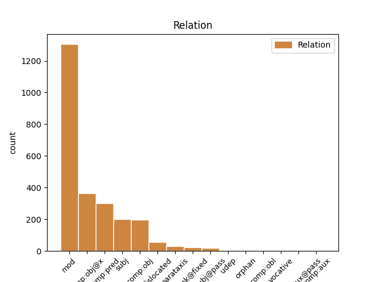
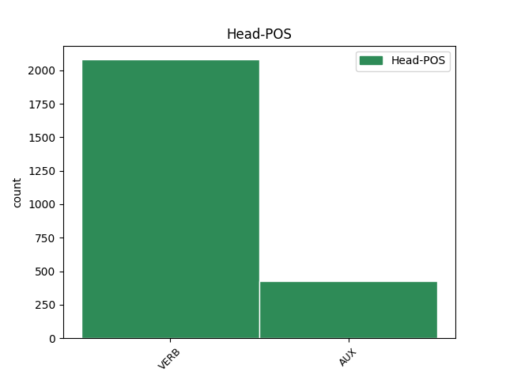
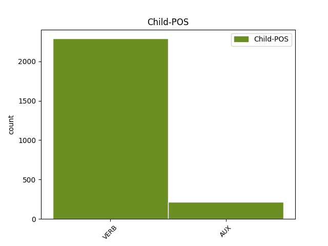

Distribution of features within this leaf



Agreement Rules sorted by frequency.
- When the dependent token is the modifer(mod) of the head token,
1 си _ _ _ _ 0 _ _ _
2 же _ _ _ _ 0 _ _ _
3 писана _ _ _ _ 0 _ _ _
4 бꙑшѧ _ _ _ _ 0 _ _ _
5 да _ _ _ _ 0 _ _ _
6 вѣрѫ _ _ _ _ 0 _ _ _
7 имете _ _ _ _ 0 _ _ _
8 ѣко _ _ _ _ 0 _ _ _
9 и҃с _ _ _ _ 0 _ _ _
10 естъ _ _ _ _ 0 _ _ _
11 х҃ъ _ _ _ _ 0 _ _ _
12 с҃нъ _ _ _ _ 0 _ _ _
13 б҃жіи _ _ _ _ 0 _ _ _
14 ꙇ _ _ _ _ 0 _ _ _
15 да _ _ _ _ 0 _ _ _
16 вѣрѫѭште вѣровати VERB V- Case=Nom|Gender=Masc|Number=Plur|Strength=Strong|Tense=Pres|VerbForm=Part|Voice=Act 19 mod _ ref=JOHN_20.31
17 живота _ _ _ _ 0 _ _ _
18 вѣчънааго _ _ _ _ 0 _ _ _
19 имате имѣти VERB V- Mood=Ind|Number=Plur|Person=2|Tense=Pres|VerbForm=Fin|Voice=Act 0 _ _ _
20 въ _ _ _ _ 0 _ _ _
21 імѧ _ _ _ _ 0 _ _ _
22 его _ _ _ _ 0 _ _ _
1 не _ _ _ _ 0 _ _ _
2 оу _ _ _ _ 0 _ _ _
3 бо _ _ _ _ 0 _ _ _
4 вѣдѣахѫ _ _ _ _ 0 _ _ _
5 кънигъ _ _ _ _ 0 _ _ _
6 ѣко _ _ _ _ 0 _ _ _
7 подобаатъ подобати VERB V- Mood=Ind|Number=Sing|Person=3|Tense=Pres|VerbForm=Fin|Voice=Act 0 _ _ _
8 емоу _ _ _ _ 0 _ _ _
9 отъ _ _ _ _ 0 _ _ _
10 мрътвꙑхъ _ _ _ _ 0 _ _ _
11 въскръснѫти въскрьснѫти VERB V- Tense=Pres|VerbForm=Inf|Voice=Act 7 comp:obj@x _ ref=JOHN_20.9
1 г҃и _ _ _ _ 0 _ _ _
2 аште _ _ _ _ 0 _ _ _
3 тꙑ _ _ _ _ 0 _ _ _
4 еси _ _ _ _ 0 _ _ _
5 възѧлъ _ _ _ _ 0 _ _ _
6 повѣждь повѣдѣти VERB V- Mood=Imp|Number=Sing|Person=2|Tense=Pres|VerbForm=Fin|Voice=Act 0 _ _ _
7 мьнѣ _ _ _ _ 0 _ _ _
8 къде _ _ _ _ 0 _ _ _
9 и _ _ _ _ 0 _ _ _
10 еси бꙑти AUX V- Mood=Ind|Number=Sing|Person=2|Tense=Pres|VerbForm=Fin|Voice=Act 6 comp:obj _ ref=JOHN_20.15
11 положилъ _ _ _ _ 0 _ _ _
12 ꙇ _ _ _ _ 0 _ _ _
13 азъ _ _ _ _ 0 _ _ _
14 ꙇ _ _ _ _ 0 _ _ _
15 вьзъмѫ _ _ _ _ 0 _ _ _
1 ненавидѧи ненавидѣти VERB V- Case=Nom|Gender=Masc|Number=Sing|Strength=Weak|Tense=Pres|VerbForm=Part|Voice=Act 6 subj _ ref=JOHN_15.23
2 мене _ _ _ _ 0 _ _ _
3 и _ _ _ _ 0 _ _ _
4 о҃тца _ _ _ _ 0 _ _ _
5 моего _ _ _ _ 0 _ _ _
6 ненавидитъ ненавидѣти VERB V- Mood=Ind|Number=Sing|Person=3|Tense=Pres|VerbForm=Fin|Voice=Act 0 _ _ _
1 си _ _ _ _ 0 _ _ _
2 же _ _ _ _ 0 _ _ _
3 писана пьсати VERB V- Case=Nom|Gender=Neut|Number=Plur|Strength=Strong|Tense=Past|VerbForm=Part|Voice=Pass 4 comp:pred _ ref=JOHN_20.31
4 бꙑшѧ бꙑти AUX V- Aspect=Perf|Mood=Ind|Number=Plur|Person=3|Tense=Past|VerbForm=Fin|Voice=Act 0 _ _ _
5 да _ _ _ _ 0 _ _ _
6 вѣрѫ _ _ _ _ 0 _ _ _
7 имете _ _ _ _ 0 _ _ _
8 ѣко _ _ _ _ 0 _ _ _
9 и҃с _ _ _ _ 0 _ _ _
10 естъ _ _ _ _ 0 _ _ _
11 х҃ъ _ _ _ _ 0 _ _ _
12 с҃нъ _ _ _ _ 0 _ _ _
13 б҃жіи _ _ _ _ 0 _ _ _
14 ꙇ _ _ _ _ 0 _ _ _
15 да _ _ _ _ 0 _ _ _
16 вѣрѫѭште _ _ _ _ 0 _ _ _
17 живота _ _ _ _ 0 _ _ _
18 вѣчънааго _ _ _ _ 0 _ _ _
19 имате _ _ _ _ 0 _ _ _
20 въ _ _ _ _ 0 _ _ _
21 імѧ _ _ _ _ 0 _ _ _
22 его _ _ _ _ 0 _ _ _
1 ꙇмъже _ _ _ _ 0 _ _ _
2 отъпоустите отъпоустити VERB V- Mood=Ind|Number=Plur|Person=2|Tense=Pres|VerbForm=Fin|Voice=Act 4 dislocated _ ref=JOHN_20.23
3 грѣхꙑ _ _ _ _ 0 _ _ _
4 отъпоустѧтъ отъпоустити VERB V- Mood=Ind|Number=Plur|Person=3|Tense=Pres|VerbForm=Fin|Voice=Act 0 _ _ _
5 сѧ _ _ _ _ 0 _ _ _
6 имъ _ _ _ _ 0 _ _ _
1 аште _ _ _ _ 0 _ _ _
2 бисте _ _ _ _ 0 _ _ _
3 любили _ _ _ _ 0 _ _ _
4 мѧ _ _ _ _ 0 _ _ _
5 въздрадовали _ _ _ _ 0 _ _ _
6 сѧ _ _ _ _ 0 _ _ _
7 бисте бꙑти AUX V- Mood=Sub|Number=Plur|Person=2|Tense=Pres|VerbForm=Fin|Voice=Act 0 _ _ _
8 оубо _ _ _ _ 0 _ _ _
9 ѣко _ _ _ _ 0 _ _ _
10 рѣхъ _ _ _ _ 0 _ _ _
11 идѫ ити VERB V- Mood=Ind|Number=Sing|Person=1|Tense=Pres|VerbForm=Fin|Voice=Act 7 parataxis _ ref=JOHN_14.28
12 къ _ _ _ _ 0 _ _ _
13 о҃тцю _ _ _ _ 0 _ _ _
14 ѣко _ _ _ _ 0 _ _ _
15 отецъ _ _ _ _ 0 _ _ _
16 мои _ _ _ _ 0 _ _ _
17 болии _ _ _ _ 0 _ _ _
18 мене _ _ _ _ 0 _ _ _
19 естъ _ _ _ _ 0 _ _ _
1 блажени _ _ _ _ 0 _ _ _
2 не _ _ _ _ 0 _ _ _
3 видѣвъ. видѣти VERB V- Case=Nom|Gender=Masc|Number=Plur|Strength=Weak|Tense=Past|VerbForm=Part|Voice=Act 0 _ _ _
4 шеи шеи VERB V- Case=Nom|Gender=Masc|Number=Plur|Strength=Weak|Tense=Past|VerbForm=Part|Voice=Act 3 unk@fixed _ ref=JOHN_20.29
5 ꙇ _ _ _ _ 0 _ _ _
6 вѣровавъшеи _ _ _ _ 0 _ _ _
1 а _ _ _ _ 0 _ _ _
2 не _ _ _ _ 0 _ _ _
3 вѣроуѩи вѣровати VERB V- Case=Nom|Gender=Masc|Number=Sing|Strength=Weak|Tense=Pres|VerbForm=Part|Voice=Act 6 subj@pass _ ref=JOHN_3.18
4 юже _ _ _ _ 0 _ _ _
5 осѫжденъ _ _ _ _ 0 _ _ _
6 естъ бꙑти AUX V- Mood=Ind|Number=Sing|Person=3|Tense=Pres|VerbForm=Fin|Voice=Act 0 _ _ _
7 ѣко _ _ _ _ 0 _ _ _
8 не _ _ _ _ 0 _ _ _
9 вѣрова _ _ _ _ 0 _ _ _
10 въ _ _ _ _ 0 _ _ _
11 імѧ _ _ _ _ 0 _ _ _
12 иночѧдааго _ _ _ _ 0 _ _ _
13 с҃на _ _ _ _ 0 _ _ _
14 б҃жиѣ _ _ _ _ 0 _ _ _
1 оува _ _ _ _ 0 _ _ _
2 разарѣѩи разарꙗти VERB V- Case=Voc|Gender=Masc|Number=Sing|Strength=Weak|Tense=Pres|VerbForm=Part|Voice=Act 8 vocative _ ref=MATT_27.40
3 ц҃рквъ _ _ _ _ 0 _ _ _
4 ꙇ _ _ _ _ 0 _ _ _
5 трьми _ _ _ _ 0 _ _ _
6 деньми _ _ _ _ 0 _ _ _
7 съзидаѩ _ _ _ _ 0 _ _ _
8 с҃ъпси съпасти VERB V- Mood=Imp|Number=Sing|Person=2|Tense=Pres|VerbForm=Fin|Voice=Act 0 _ _ _
9 себе _ _ _ _ 0 _ _ _
1 она _ _ _ _ 0 _ _ _
2 шьдъши _ _ _ _ 0 _ _ _
3 вьзвѣсти възвѣстити VERB V- Aspect=Perf|Mood=Ind|Number=Sing|Person=3|Tense=Past|VerbForm=Fin|Voice=Act 0 _ _ _
4 бꙑвъшимъ бꙑти AUX V- Case=Dat|Gender=Masc|Number=Plur|Strength=Weak|Tense=Past|VerbForm=Part|Voice=Act 3 udep _ ref=MARK_16.10
5 съ _ _ _ _ 0 _ _ _
6 нимъ _ _ _ _ 0 _ _ _
7 плачѫштемъ _ _ _ _ 0 _ _ _
8 сѧ _ _ _ _ 0 _ _ _
9 и _ _ _ _ 0 _ _ _
10 рꙑдаѭштемъ _ _ _ _ 0 _ _ _
1 Бьдите _ _ _ _ 0 _ _ _
2 оубо _ _ _ _ 0 _ _ _
3 на _ _ _ _ 0 _ _ _
4 вьсѣко _ _ _ _ 0 _ _ _
5 врѣмѧ _ _ _ _ 0 _ _ _
6 молѧште _ _ _ _ 0 _ _ _
7 сѧ _ _ _ _ 0 _ _ _
8 да _ _ _ _ 0 _ _ _
9 съподобите _ _ _ _ 0 _ _ _
10 сѧ _ _ _ _ 0 _ _ _
11 оубѣжати оубѣжати VERB V- Tense=Pres|VerbForm=Inf|Voice=Act 0 _ _ _
12 въсѣхъ _ _ _ _ 0 _ _ _
13 сихъ _ _ _ _ 0 _ _ _
14 хотѧштихъ хотѣти VERB V- Case=Gen|Gender=Neut|Number=Plur|Strength=Weak|Tense=Pres|VerbForm=Part|Voice=Act 11 comp:obl _ ref=LUKE_21.36
15 бꙑти _ _ _ _ 0 _ _ _
16 и _ _ _ _ 0 _ _ _
17 стати _ _ _ _ 0 _ _ _
18 прѣдъ _ _ _ _ 0 _ _ _
19 с҃номъ _ _ _ _ 0 _ _ _
20 ч҃лвчскомь _ _ _ _ 0 _ _ _
1 не _ _ _ _ 0 _ _ _
2 дивите _ _ _ _ 0 _ _ _
3 сѧ _ _ _ _ 0 _ _ _
4 семоу _ _ _ _ 0 _ _ _
5 ѣко _ _ _ _ 0 _ _ _
6 грѧдетъ _ _ _ _ 0 _ _ _
7 година _ _ _ _ 0 _ _ _
8 вь _ _ _ _ 0 _ _ _
9 нюже _ _ _ _ 0 _ _ _
10 вьси _ _ _ _ 0 _ _ _
11 сѫштеи _ _ _ _ 0 _ _ _
12 въ _ _ _ _ 0 _ _ _
13 гробѣхъ _ _ _ _ 0 _ _ _
14 оуслꙑшѧтъ _ _ _ _ 0 _ _ _
15 г҃лсъ _ _ _ _ 0 _ _ _
16 с҃на _ _ _ _ 0 _ _ _
17 б҃жиѣ _ _ _ _ 0 _ _ _
18 и _ _ _ _ 0 _ _ _
19 изидѫтъ _ _ _ _ 0 _ _ _
20 сътворьшеи сътворити VERB V- Case=Nom|Gender=Masc|Number=Plur|Strength=Weak|Tense=Past|VerbForm=Part|Voice=Act 0 _ _ _
21 благаа _ _ _ _ 0 _ _ _
22 въ _ _ _ _ 0 _ _ _
23 вьскрѣшение _ _ _ _ 0 _ _ _
24 животоу _ _ _ _ 0 _ _ _
25 а _ _ _ _ 0 _ _ _
26 сътворьшеи сътворити VERB V- Case=Nom|Gender=Masc|Number=Plur|Strength=Weak|Tense=Past|VerbForm=Part|Voice=Act 20 orphan _ ref=JOHN_5.29
27 зълаа _ _ _ _ 0 _ _ _
28 въ _ _ _ _ 0 _ _ _
29 вьскрѣшение _ _ _ _ 0 _ _ _
30 сѫдоу _ _ _ _ 0 _ _ _
Disagree Examples:
1 Ꙇ _ _ _ _ 0 _ _ _
2 се _ _ _ _ 0 _ _ _
3 принѣсѧ принести VERB V- Aspect=Perf|Mood=Ind|Number=Plur|Person=3|Tense=Past|VerbForm=Fin|Voice=Act 0 _ _ _
4 емоу _ _ _ _ 0 _ _ _
5 ослабленъ _ _ _ _ 0 _ _ _
6 жилами _ _ _ _ 0 _ _ _
7 на _ _ _ _ 0 _ _ _
8 одрѣ _ _ _ _ 0 _ _ _
9 лежѧщъ лежати VERB V- Case=Acc|Gender=Masc|Number=Sing|Strength=Strong|Tense=Pres|VerbForm=Part|Voice=Act 3 mod _ ref=MATT_9.2
1 въставъ въстати VERB V- Case=Nom|Gender=Masc|Number=Sing|Strength=Strong|Tense=Past|VerbForm=Part|Voice=Act 2 mod _ ref=MATT_9.5
2 ходи ходити VERB V- Mood=Imp|Number=Sing|Person=2|Tense=Pres|VerbForm=Fin|Voice=Act 0 _ _ _
1 въставъ въстати VERB V- Case=Nom|Gender=Masc|Number=Sing|Strength=Strong|Tense=Past|VerbForm=Part|Voice=Act 2 mod _ ref=MATT_9.6
2 возьми възѧти VERB V- Mood=Imp|Number=Sing|Person=2|Tense=Pres|VerbForm=Fin|Voice=Act 0 _ _ _
3 ложе _ _ _ _ 0 _ _ _
4 твое _ _ _ _ 0 _ _ _
5 ꙇ _ _ _ _ 0 _ _ _
6 иди _ _ _ _ 0 _ _ _
7 въ _ _ _ _ 0 _ _ _
8 домъ _ _ _ _ 0 _ _ _
9 свои _ _ _ _ 0 _ _ _
1 Ꙇ҅ _ _ _ _ 0 _ _ _
2 прѣходѧ прѣходити VERB V- Case=Nom|Gender=Masc|Number=Sing|Strength=Strong|Tense=Pres|VerbForm=Part|Voice=Act 6 mod _ ref=MATT_9.9
3 и҃ссъ _ _ _ _ 0 _ _ _
4 отъ _ _ _ _ 0 _ _ _
5 тоудѫ _ _ _ _ 0 _ _ _
6 видѣ видѣти VERB V- Aspect=Perf|Mood=Ind|Number=Sing|Person=3|Tense=Past|VerbForm=Fin|Voice=Act 0 _ _ _
7 члⷦ҇ва _ _ _ _ 0 _ _ _
8 на _ _ _ _ 0 _ _ _
9 мꙑтьници _ _ _ _ 0 _ _ _
10 сѣдѧща _ _ _ _ 0 _ _ _
11 ꙇ҅мене _ _ _ _ 0 _ _ _
12 матеа _ _ _ _ 0 _ _ _
13 ꙇ _ _ _ _ 0 _ _ _
14 г҃ла _ _ _ _ 0 _ _ _
15 емоу _ _ _ _ 0 _ _ _
1 Ꙇ҅ _ _ _ _ 0 _ _ _
2 прѣходѧ _ _ _ _ 0 _ _ _
3 и҃ссъ _ _ _ _ 0 _ _ _
4 отъ _ _ _ _ 0 _ _ _
5 тоудѫ _ _ _ _ 0 _ _ _
6 видѣ видѣти VERB V- Aspect=Perf|Mood=Ind|Number=Sing|Person=3|Tense=Past|VerbForm=Fin|Voice=Act 0 _ _ _
7 члⷦ҇ва _ _ _ _ 0 _ _ _
8 на _ _ _ _ 0 _ _ _
9 мꙑтьници _ _ _ _ 0 _ _ _
10 сѣдѧща сѣдѣти VERB V- Case=Gen|Gender=Masc|Number=Sing|Strength=Strong|Tense=Pres|VerbForm=Part|Voice=Act 6 comp:pred _ ref=MATT_9.9
11 ꙇ҅мене _ _ _ _ 0 _ _ _
12 матеа _ _ _ _ 0 _ _ _
13 ꙇ _ _ _ _ 0 _ _ _
14 г҃ла _ _ _ _ 0 _ _ _
15 емоу _ _ _ _ 0 _ _ _